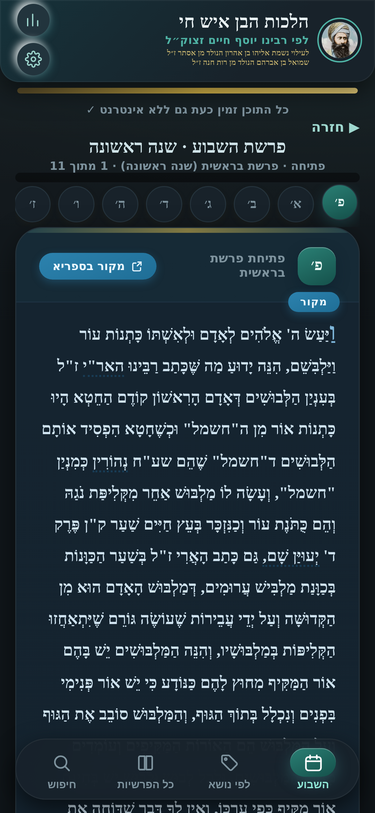
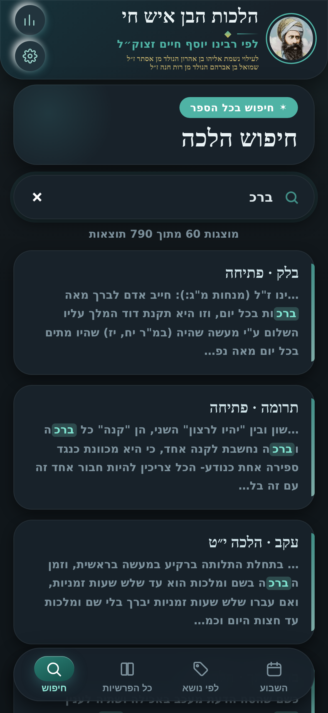
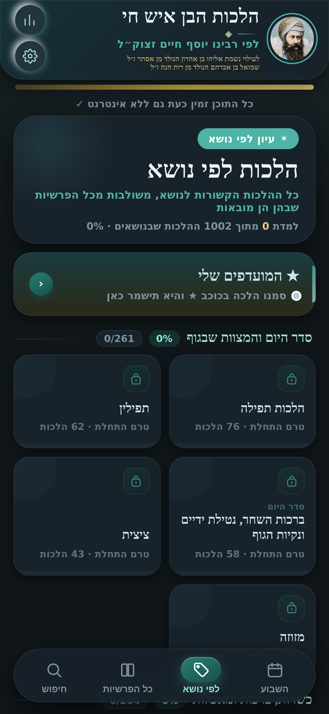
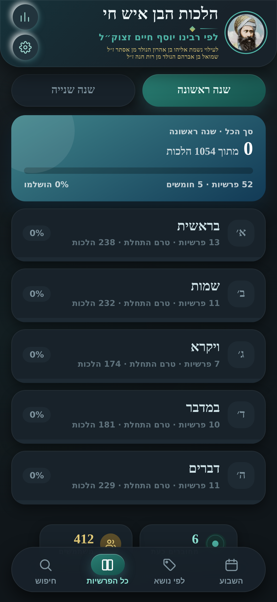

בתוך האפליקציה
נבנתה להיות שקטה וברורה.




פרשת השבוע
נפתחת בדיוק
בפרשה הנכונה.
האפליקציה יודעת איזו פרשה קוראים השבוע, ומציגה את ההלכות שלה משנה ראשונה ושנייה — בלי שתצטרכו לחפש.
קריאה
טקסט ברור,
עם ניקוד וביאור.
כל הלכה מוצגת עם מקור, ניקוד מלא, ואפשרות לקפוץ ישירות למקור בספריא.
חיפוש
כל ספר בן איש חי,
במילה אחת.
חיפוש חופשי בתוך כל ההלכות משנה ראשונה ושנייה, עם הדגשת התוצאה בתוך הטקסט.
לפי נושא
תפילה, שבת,
בית — לפי נושא.
כל ההלכות שבהן הן מקובצות לפי נושא, כדי שתוכלו ללמוד ממוקד בלי לדפדף בין פרשות.
כל הפרשיות
כל חומש,
כל פרשה, מסודר.
מבט על כל חמשה חומשי תורה, עם אחוז ההתקדמות של כל פרשה ופרשה.